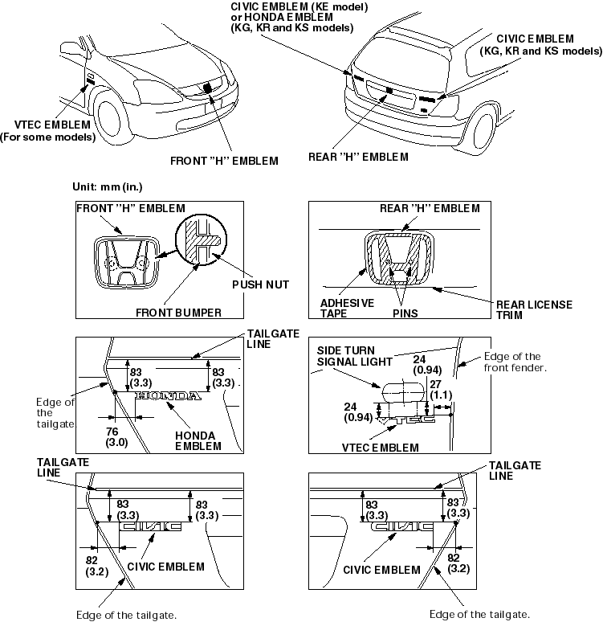

Exterior Trim
Emblem Replacement
|
20-43 |
|
NOTE: When removing the emblem, take care not to scratch the body.
- To remove the front ''H'' emblem and rear ''H'' emblem, remove these items. Refer to the '01 Civic Shop Manual on this CD:
- Front bumper (see page 20-243)
- Rear license trim (see page 20-255)
- Clean the body surface with a sponge dampened in alcohol. After cleaning, keep oil, grease and water off the surface.
- Apply the emblem where shown.
